概述 Overview
STTM - 跨境電商代發貨平台
#B2B #SaaS #Software UI Design
產品服務｜STTM（Ship To The Moon）是專為電商創業者與品牌賣家打造的一站式代發貨平台，整合採購資源與多渠道出貨能力，無論是獨立站、社群商務還是各大電商平台，都能無縫串接。
Team | Ship To The Moon
Role | UI Designer
Year | 2021
Task
以品牌一致性為核心，對現有功能與畫面進行系統性優化，重新梳理元件規範並延伸設計語言。著重互動設計，確保每個介面元素都能有效引導用戶操作，降低使用門檻，提升整體使用體驗。
Solution
以品牌色「紫色」為主色調，搭配具科技感的漸層輔助色，建立鮮明的視覺識別。重新定義元件的形狀與尺寸規範，並導入圖示系統，幫助用戶更快速辨識操作目標。針對核心操作流程與介面佈局進行優化，使整體系統在視覺與操作上更具一致性與流暢感。
資訊架構 Information Architecture
STTM 系統以 Dashboard 為核心，涵蓋 Inventory、Orders、Finance、Stores、Support Ticket、Affiliate、Shipping Setting 等主要模組，支援使用者從採購到出貨的完整 Dropshipping 流程。
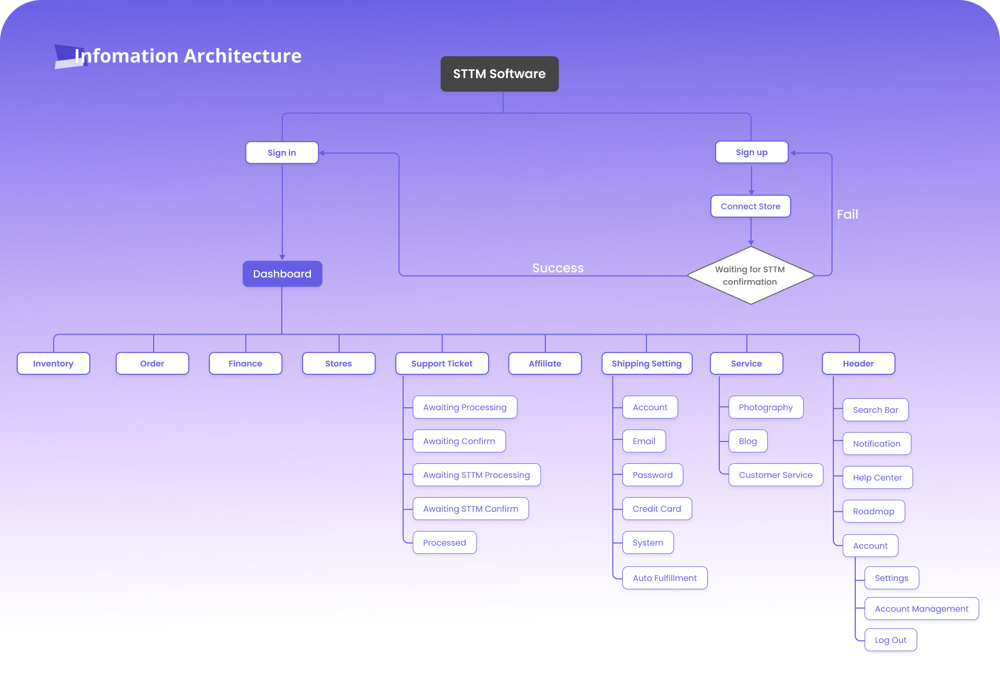
Style Guide
Color Palette
以品牌紫色（#6C54A7）為主色調，搭配漸層藍紫（#8367C7）與青色（#27AB9F）作為輔助色，呈現科技感與專業形象。文字色系採深黑（#191919）、中灰（#B8B8B8）與淺白（#FAFAFA）確保閱讀清晰度。
Typography
字型採用 Roboto，以 Medium 與 Regular 兩種字重構成層次系統：H1（36px）至 Button（14px），確保在資訊密度高的後台介面中維持清晰的視覺層級。
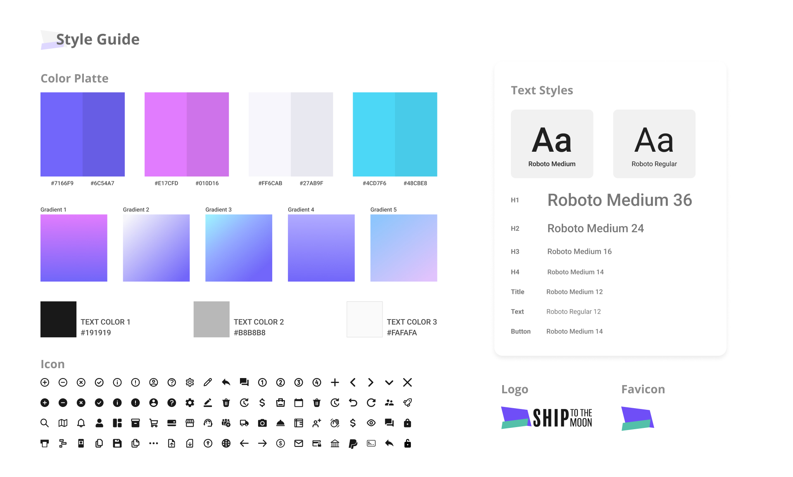
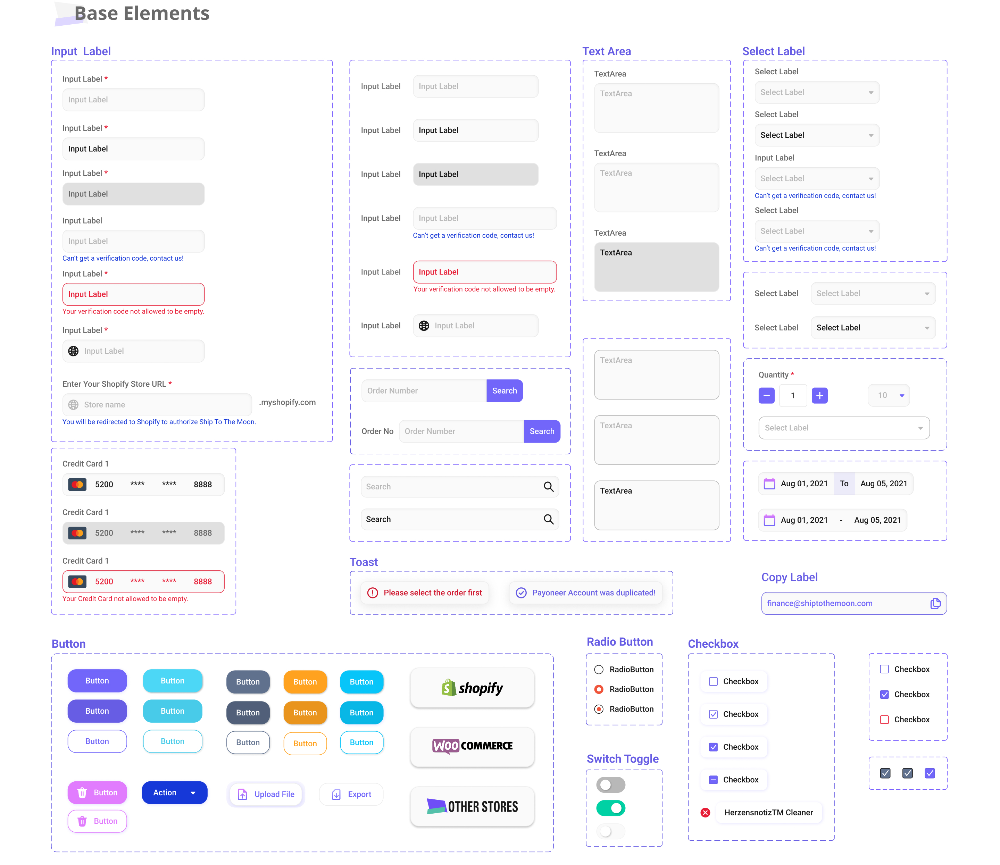
UI Design
Dashboard
整合帳戶餘額、營收數據、已付款訂單、客服票券等關鍵指標於首頁，並透過右側通知欄即時提醒重要資訊，讓用戶一進入系統即掌握全局狀態。
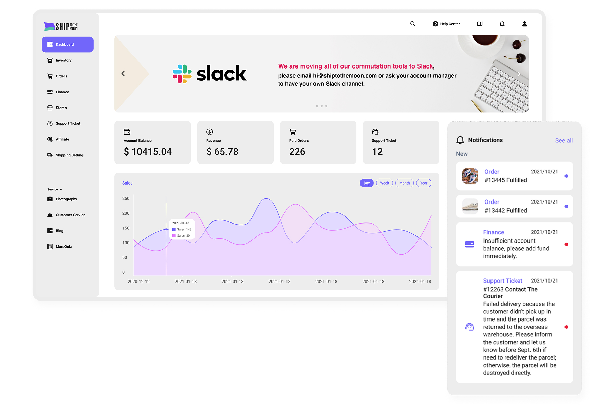
Support Ticket
客服票券系統支援 5 種狀態管理（Awaiting Processing、Awaiting Confirm、Awaiting STTM Processing、Awaiting STTM Confirm、Processed），同時提供 12 種問題類型分類，針對不同問題自動對應所需填寫欄位，減少來回確認時間，提升客服處理效率。
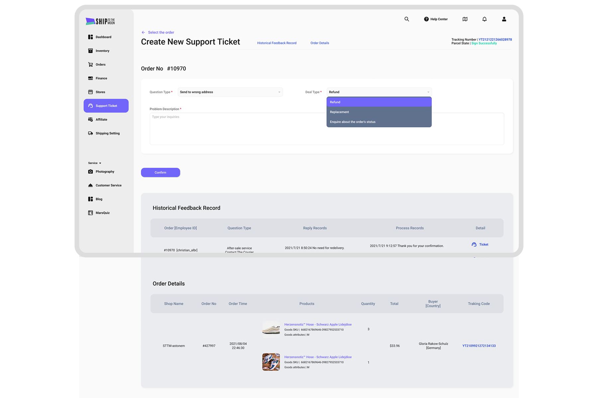
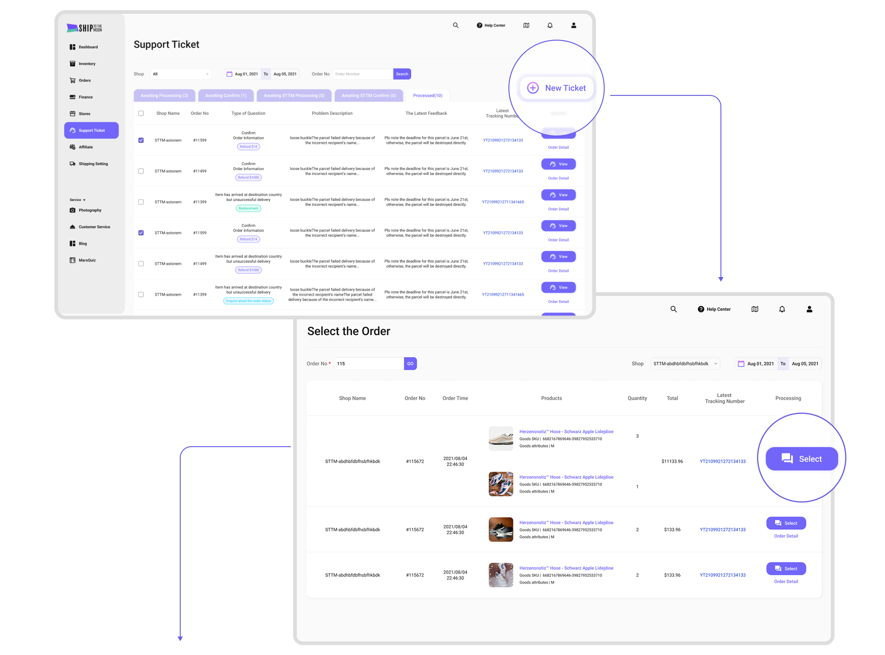
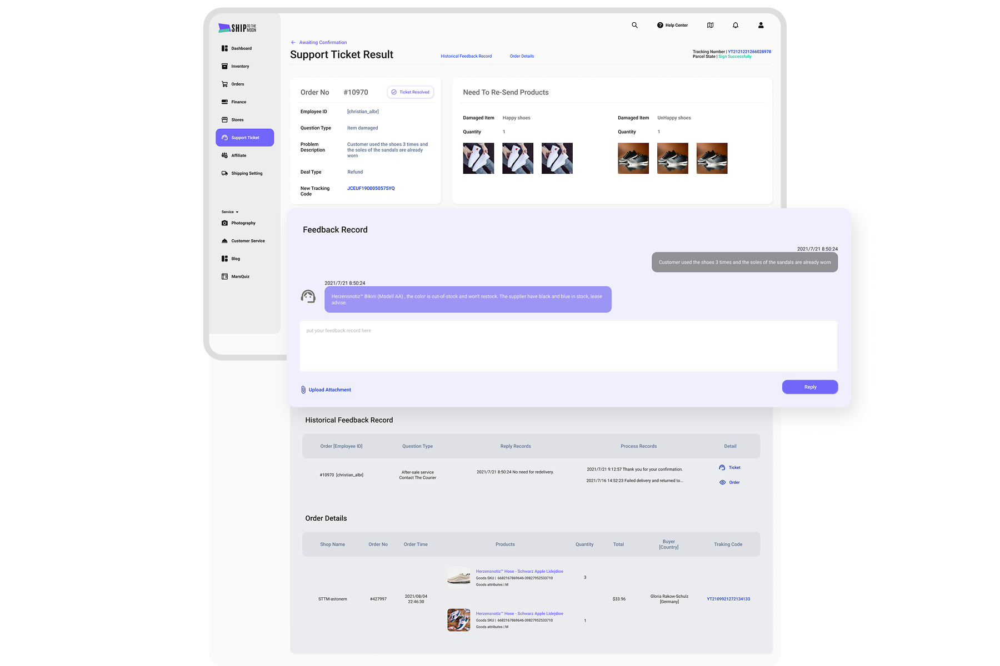
Orders
訂單頁整合店鋪訂單資訊、訂單狀態、報價與出貨管理，支援 Auto Fulfillment 自動履行功能，讓用戶免於手動逐筆處理，大幅提升作業效率。
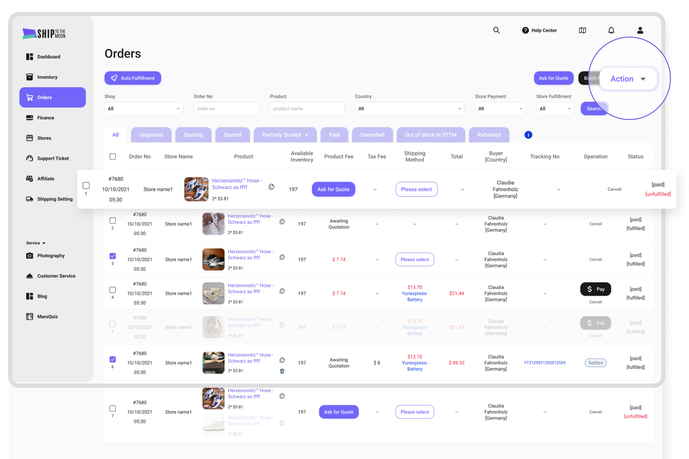
Stores
支援串接多種電商平台，包含 Shopify、WooCommerce 及其他電商平台。針對不同平台設計對應的連接流程與表單，確保用戶能順暢完成店鋪授權與整合。
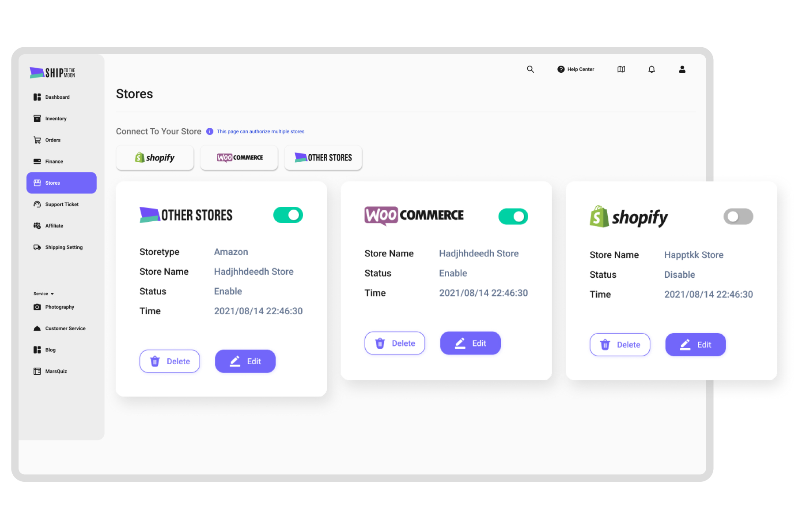
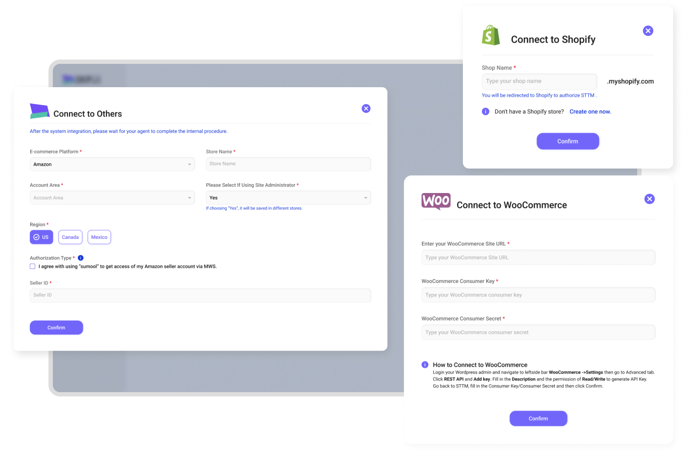
Finance
財務頁面整合儲值記錄與支出記錄，支援 4 種付款方式（Payoneer、Credit Card、Bank Transfer、PayPal），並依儲值金額提供階梯式優惠，視覺上以付款方式卡片清楚區分狀態。
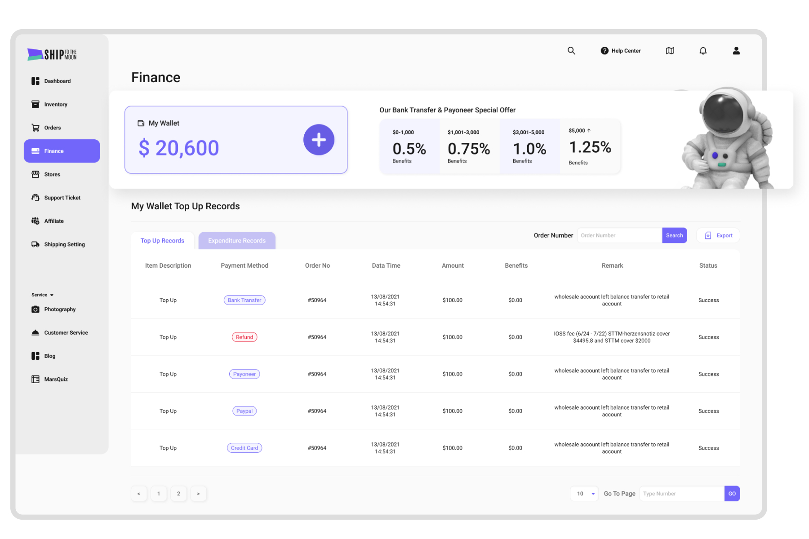
Settings
帳號設定涵蓋 Email、密碼、信用卡、系統設定與 Auto Fulfillment 等分頁，支援用戶自行設定預設物流方式與出貨通知規則，減少重複性手動操作。
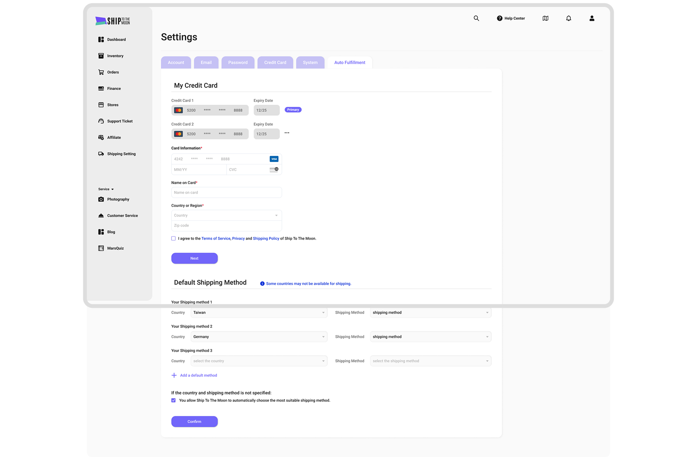
Takeaway
系統性設計思維
面對功能複雜的 B2B 後台系統，從建立元件規範出發，確保每個模組在視覺語言上保持一致，讓整體介面在擴充功能時仍維持可預期性。
在技術條件內找到最佳解
在既有程式架構的限制下，優先針對核心操作流程與高頻功能進行體驗優化，學會在約束條件下做出對用戶最有價值的設計決策。